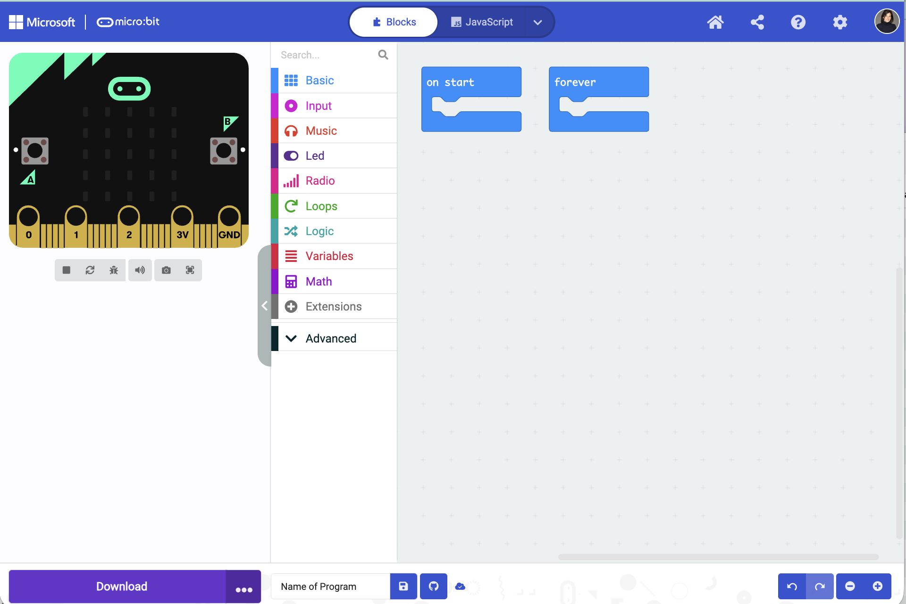
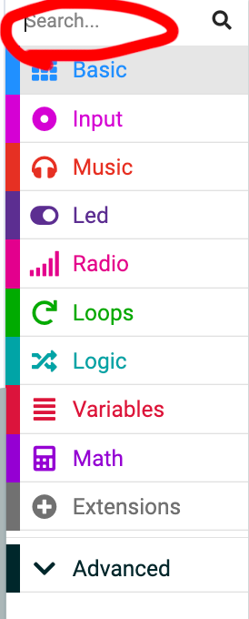

Section 1
What is MakeCode?
MakeCode is a free website that lets you program your micro:bit. You open it in any browser — no install needed. Everything you build there goes onto the micro:bit, which sits inside your Cutebot Pro and tells it what to do.
Open it at:
makecode.microbit.org
Works in Chrome, Edge, Firefox, and Safari. No account needed to start, but if you want to save your work in the cloud, you do need an account.

Section 2
What are blocks?
Blocks are instructions. Every block does one thing — move a motor, show a number, wait a second. You snap blocks together to build a sequence. The program runs top to bottom, one block at a time.
Think of it like snapping pieces together. Each piece snaps into the next. The shape of a block tells you where it can connect — just like LEGO pieces only fit in certain spots.
basic.showString("Hello!")
This block runs once, the moment the micro:bit turns on. It scrolls the word "Hello!" across the LED grid.
Try it in the simulator — you'll see the letters scroll across the tiny screen on the left.
Block shapes
The shape of a block tells you what it does and where it fits. You don't need to memorize these — you'll recognize them naturally after a few minutes of building.
Event blocks — "when this happens"
These always go at the top of a stack. They wait for something to happen — like the micro:bit turning on, or you pressing a button — then run the blocks inside.
on button A pressed
Stack blocks — "do this"
These are the action blocks. They snap inside an event block and run in order, top to bottom.
show string "Go!"
Value blocks — "a number or word"
These fit into round or oval holes inside other blocks. They carry a value — like a speed number or a sensor reading. Their color matches their category.
SPEED
Boolean blocks — "true or false"
These are conditions — questions that can only be true or false. They fit into the hexagon-shaped slots inside Logic blocks like "if/then." Logic blocks are teal.
button A is pressed?
Section 3
Block categories — colors mean something
Every category has a color. Once you know the colors, you can find any block in seconds. Here are the ones you'll use most.
Basic
Show text, numbers, and LED patterns. Pause and clear the screen.
Input
React to buttons A, B, A+B, and the accelerometer (tilt sensor).
Loops
Repeat a block a set number of times, or loop forever.
Logic
If/then/else decisions. "If the sensor sees the border, stop."
Variables
Create named boxes that hold numbers. SPEED, POWER, TURNING.
Math
Add, subtract, multiply, divide. Also modulo, absolute value, random numbers.
Cutebot Pro
Drive motors, read sensors, control lights. The robot-specific blocks.
LED
Turn individual LEDs on or off. Draw bar graphs and animations.
Can't find a block? Click the category you think it belongs to. If you don't see it, scroll down — most categories have more blocks hidden below the fold. You can also type in the search bar at the top of the toolbox.

Section 4
Build your first program — step by step
Let's build a program that shows a heart when you press button A, and a number when you press button B. This uses three categories: Input, Basic, and LED.
1
Open MakeCode and start a new project
Go to makecode.microbit.org → click New Project → give it a name like my-first-program.
2
Find the "on button A pressed" block
Click the Input category in the toolbox. Drag "on button A pressed" into the workspace.
3
Drop a "show icon" block inside it
Click Basic. Drag "show icon" and snap it inside the button block. Pick the ❤️ heart.
4
Repeat for button B — show a number
Drag another "on button pressed" block. Change the dropdown from A to B. Drop a "show number" block inside it and type 42.
5
Test it in the simulator
Click the A button on the simulator (bottom left of the fake micro:bit). You should see the heart. Click B — you should see 42 scroll across.
input.onButtonPressed(Button.A, function () {
basic.showIcon(IconNames.Heart)
})
input.onButtonPressed(Button.B, function () {
basic.showNumber(42)
})
Two separate stacks — one for each button. Neither one runs until you press the button.
Button A → heart on screen.
Button B → number 42 scrolls across.
The micro:bit watches both buttons at the same time. Whichever you press first runs first.
You just wrote a real program. It has two event handlers — code that waits for something to happen. That's the same pattern used in every Velocity Arena match program.
Section 5
Variables — named boxes for numbers
A variable is a named spot in memory that holds a value. Every Velocity Arena program uses variables to store your stats: SPEED, ENDURANCE, TURNING, POWER. Here's what they look like in blocks.
let SPEED = 8
let POWER = 6
basic.showNumber(SPEED)
basic.pause(1000)
basic.showNumber(POWER)
Set variable — gives the box a value. Do this at the start.
Use variable — drops the value into another block. Wherever you use SPEED, the micro:bit replaces it with 8.
To create a variable: click Variables → Make a Variable → type the name.
Your four stats must total 20. SPEED + ENDURANCE + TURNING + POWER = 20. Set the numbers at the top of your program before you add anything else.
Section 6
If / else — making decisions
Programs need to make choices. "If the border sensor fires, back up. Otherwise, keep driving." That's an if/else block. It checks a condition, then runs different code depending on the answer.
let score = 0
if (score > 5) {
basic.showIcon(IconNames.Happy)
} else {
basic.showIcon(IconNames.Sad)
}
The diamond shape is the condition — the yes/no question.
If score is greater than 5 → happy face.
Else → sad face.
Try changing score to 3 and watch the simulator switch to the sad face.
Section 7
Cutebot Pro blocks — driving the robot
The Cutebot Pro blocks won't show up until you add the extension. Do this once per project. After that, a pink "Cutebot Pro" category appears in your toolbox.
1
Open Extensions
Scroll to the bottom of the toolbox and click Extensions.
2
Search for Cutebot
Type cutebot pro in the search box and press Enter.
3
Click the Cutebot Pro tile
MakeCode downloads the extension. A pink Cutebot Pro category appears in your toolbox. Done.
let SPEED = 8
let currentPower = 0
input.onButtonPressed(Button.A, function () {
currentPower = SPEED * 100 / 20
CutebotPro.pwmCruiseControl(currentPower, currentPower)
basic.pause(2000)
CutebotPro.stopImmediately(CutebotProMotors.ALL)
})
pwmCruiseControl(left, right) — sends power to both motors. Same number on both sides = straight line.
pause(2000) — waits 2 seconds (2000 milliseconds).
stopImmediately — cuts both motors instantly.
This is the same pattern as the Speed Test program.
currentPower = SPEED × 100 ÷ 20 — this converts your stat (1–20) into a motor power percentage (5%–100%). SPEED 10 = 50% power. SPEED 20 = 100% power.
Section 8
Downloading to your micro:bit
Testing in the simulator is great, but the real test is on the robot. Here's how to send your program to the micro:bit.
Step 1
Plug in the micro:bit
Use the USB cable. A drive called MICROBIT appears on your computer.
Step 2
Click Download
The big purple/blue button at the bottom of MakeCode. The app sends your program directly to the micro:bit.
Step 3
Pair
A pairing prompt appears. Follow the steps to connect the micro:bit. You only need to do this once per device.
Step 4
Disconnect
The yellow light flashes while it loads. When it stops, unplug the cable and put the micro:bit on the robot.
The yellow light flashing = don't unplug. Wait until it stops. Pulling the cable while it's writing can corrupt the program.
After pairing once, the next download is instant. The app remembers your micro:bit. Just plug in, click Download, and it flashes automatically every time after that.
Section 9
Download the MakeCode app — highly recommended
The browser version of MakeCode works, but the desktop app — available for Windows and Mac — gives you cleaner hardware connections, offline access, and real-time sensor data. All things that matter when you're working with a physical robot.
Web browser
Works anywhere
No install
Needs internet
Drag-and-drop to flash
No serial data logging
MakeCode app
Works offline
Faster, more stable
Direct USB flash (no drag-drop)
Live sensor data logging
Better for complex projects
Offline — works without internet
Once installed, you can write and test code anywhere. No Wi-Fi needed. Good for classrooms where the connection is spotty.
Direct USB flash
The app connects directly to the micro:bit over USB. One click sends the program. You don't have to pair with the MICROBIT.
Serial data logging — see your sensor live
The app can show real-time data from sensors — speed readings, power values, distance — plotted as a graph while your bot runs. The web version can't do this.
Faster and more stable
Running as a standalone app means it doesn't compete with your browser tabs for memory. Large programs compile faster and the connection to the micro:bit is more reliable.
Free to install and use. You may install any number of copies on your devices. Not sure which to pick? Ask your teacher — or go to makecode.microbit.org/offline-app and the page will detect your OS.
Always eject the micro:bit before unplugging.
The micro:bit shows up on your computer like a USB drive. Treat it the same way — eject it properly before pulling the cable. Disconnecting it without ejecting can corrupt your program or damage the file system on the board.
Windows: right-click MICROBIT in File Explorer → Eject
Mac: drag MICROBIT to Trash, or click eject ⏏ in Finder
Section 10
JavaScript — what it is and when to use it
Every block is secretly JavaScript. When you switch to JavaScript mode in MakeCode, you see the exact code your blocks represent. It's the same program — just written as text instead of pictures.
Blocks mode
→ the same program →
JavaScript mode
input.onButtonPressed(Button.A, function () {
basic.showString("Go!")
basic.pause(500)
basic.clearScreen()
})
input.onButtonPressed(Button.A, function () {
basic.showString("Go!")
basic.pause(500)
basic.clearScreen()
})
Both do exactly the same thing. The blocks version is easier to read. The JavaScript version is faster to type once you know what you're doing — and it's how professional software is written.
How to switch between modes
→
Blocks → JavaScript
Click the { } JavaScript button at the top of MakeCode. Your blocks instantly become code you can read and edit.
←
JavaScript → Blocks
Click 🧩 Blocks. MakeCode converts your code back into blocks. If your code has a typo, it'll warn you first.
One important rule: Not every JavaScript program can convert back to blocks. If you write things in JavaScript that don't have a matching block, MakeCode will mark those lines as "untranslatable." That's fine — just means you're writing code that goes beyond what blocks can show.
Tips for reading JavaScript
function () { }
A container for a group of blocks. Everything between the { } curly braces runs together.
let x = 0
Creates a variable named x and sets it to 0. Same as the "set variable" block.
basic.pause(1000)
Waits 1000 milliseconds = 1 second. The number in the parentheses is the input.
// comment
Anything after // is a note for humans. The micro:bit ignores it. Great for explaining what a line does.
if ( ) { } else { }
A decision block in text form. The condition goes in the ( ) parentheses. The action goes in the { } braces.
while ( ) { }
Keep running the code inside { } as long as the condition in ( ) is true. Used in every Velocity Arena match loop.
// Set your stats here. Must total 20.
let SPEED = 8
let ENDURANCE = 6
let TURNING = 3
let POWER = 3
// Press A to drive for 2 seconds
input.onButtonPressed(Button.A, function () {
let power = SPEED * 100 / 20
CutebotPro.pwmCruiseControl(power, power)
basic.pause(2000)
CutebotPro.stopImmediately(CutebotProMotors.ALL)
})
This is the Speed Test program in JavaScript.
Line 2–5: four variables, totaling 20.
Line 8: button A handler.
Line 9: compute motor power from SPEED.
Line 10: spin both motors.
Line 11: wait 2 seconds.
Line 12: stop.
You can paste this into MakeCode and switch to Blocks view to see it as blocks.